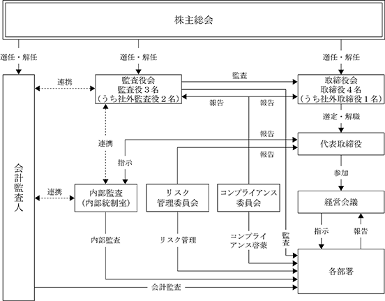

※ 当事業年度の末日（2024年１月31日）における内容を記載しております。提出日の前月末現在（2024年３月31日）において、記載すべき内容が当事業年度の末日における内容から変更がないため、提出日の前月末現在に係る記載を省略しております。
(注) １．新株予約権１個につき目的となる株式数は、100株であります。
２．本新株予約権の割当日後、当社が当社普通株式につき株式分割（当社普通株式の株式無償割当てを含む。以下同じ。）又は株式併合を行う場合、次の算式により付与株式数を調整するものとする。ただし、かかる調整は、本新株予約権のうち、当該時点で権利行使されていない本新株予約権の付与株式数についてのみ行われ、調整の結果１株未満の端数が生じた場合は、これを切り捨てる。
３．新株予約権の行使に際して出資される当社普通株式１株当たりの金銭の額（以下「行使価額」という。）は、本新株予約権発行の日が属する月の前月各日における東京証券取引所の当社普通株式の普通取引の終値の平均値に1.05を乗じた金額とし、１円未満の場合の端数は切り上げる。ただし、その価額が新株予約権発行の日における東京証券取引所の当社普通株式の普通取引の終値（これが存在しない場合には同日に先立つ直近取引日の終値とする。）を下回る場合は、当該終値とする。
当社が、本新株予約権の割当日後、当社が当社普通株式につき株式分割又は株式併合を行う場合、次の算式により行使価額を調整し、調整により生じる１円未満の端数は切り上げる。
４．新株予約権の割当てを受けた者は、権利行使時点においても、当社の取締役等の役員又は従業員のいずれかの地位にあることを要する。ただし、当社取締役会が正当な理由があるものと認めた場合にはこの限りではない。
その他の条件は、当社と新株予約権の割当てを受けた者との間で締結した「新株予約権付与契約」で定めるところによる。
５．当社が、合併（合併により当社が消滅する場合に限る。）、吸収分割若しくは新設分割（それぞれ当社が分割会社となる場合に限る。）、株式交換又は株式移転（それぞれ当社が完全子会社となる場合に限る。）（以下総称して「組織再編行為」という。）をする場合、組織再編行為の効力発生日の直前において残存する本新株予約権（以下「残存新株予約権」という。）を保有する本新株予約権者に対し、それぞれの場合に応じて会社法第236条第１項第８号のイからホまでに掲げる株式会社（以下「再編対象会社」という。）の新株予約権を以下の条件に基づき交付する。この場合においては、残存新株予約権は消滅する。ただし、以下の条件に沿って再編対象会社の新株予約権を交付する旨を、吸収合併契約、新設合併契約、吸収分割契約、新設分割計画、株式交換契約又は株式移転計画において定めた場合に限る。
本新株予約権者が保有する残存新株予約権の数と同一の数をそれぞれ交付する。
再編対象会社の普通株式とする。
組織再編行為の条件等を勘案のうえ、（注）２．に準じて目的となる株式の数につき合理的な調整がなされた数とする。
組織再編行為の条件等を勘案のうえ、（注）３．に準じて行使価額につき合理的な調整がなされた額に、上記（3）に従って決定される当該新株予約権の目的となる再編対象会社の株式の数を乗じて得られる金額とする。
本新株予約権を行使することができる期間の開始日と組織再編行為の効力発生日のうち、いずれか遅い日から本新株予約権を行使することができる期間の満了日までとする。
上表の「新株予約権の行使の条件」欄に準じて決定する。
再編対象会社が消滅会社となる合併契約の議案又は再編対象会社が完全子会社となる株式交換契約の議案若しくは株式移転計画の議案につき再編対象会社の株主総会で承認された場合（株主総会決議が不要の場合は当該議案につき当社取締役会が決議した場合）又は株主から当該株主総会の招集の請求があった場合において、再編対象会社は、再編対象会社の取締役会が別途取得する日を定めた場合は、当該日が到来することをもって、本新株予約権の全部を無償で取得する。
譲渡による新株予約権の取得については、再編対象会社の取締役会の承認（再編対象会社が取締役会設置会社でない場合は株主総会）を要する。
本新株予約権の行使により株式を発行する場合の増加する資本金の額は、会社計算規則第17条の定めるところに従って算定された資本金等増加限度額に0.5を乗じた金額とし、計算の結果１円未満の端数を生じる場合はその端数を切り上げた額とする。増加する資本準備金の額は、資本金等増加限度額より増加する資本金の額を減じた額とする。
該当事項はありません。
③ 【その他の新株予約権等の状況】
該当事項はありません。
該当事項はありません。
(注）新株予約権の行使による増加であります。
2024年１月31日現在
（注）自己株式888,500株は、「個人その他」に8,885単元株含まれています。
2024年１月31日現在
(注) １．上記は株主名簿の記載に基づくものです。
２．発行済株式（自己株式888,500株を除く。）の総数に対する所有株式数の割合は、小数点以下第３位を四捨五入しております。
2024年１月31日現在
2024年１月31日現在
（注）2023年５月24日に実施した譲渡制限付株式報酬としての自己株式の処分により、自己株式が348,000株減少しております。
(8) 【役員・従業員株式所有制度の内容】
①制度の概要
当社は、2023年４月25日開催の第24期定時株主総会の決議に基づき、取締役（社外取締役を除く。）及び執行役員（以下、「対象取締役等」といいます。）を対象に、対象取締役等が当社の中長期的な企業価値向上に向けた取り組みや株主の皆様との一層の価値共有を促進することを目的として、譲渡制限付株式報酬制度（以下、「本制度」といいます。）を導入しております。
対象取締役等は、本制度に基づき当社から支給された金銭報酬債権の全部を現物出資財産として払込み、当社普通株式について発行又は処分を受けるものであります。
②本制度により取得させる予定の株式の総数及び総額
本制度に基づき対象取締役等に対して支給する金銭報酬債権の総額は、年額50,000千円以内とし、当社が新たに発行又は処分する普通株式の総数は、年450千株以内としております。
③本制度による受益権その他の権利を受けることができる者の範囲
当社の取締役（社外取締役を除く。）及び執行役員のうち受益者要件を充足する者であります。
該当事項はありません。
該当事項はありません。
該当事項はありません。
(注)当事業年度における「その他（譲渡制限付株式報酬による自己株式の処分）」は、2023年４月25日開催の取締役会決議に基づき実施した、譲渡制限付株式報酬としての自己株式の処分であります。
当社は、株主に対する利益還元を重要な経営課題と認識しており、企業体質の強化と将来の事業展開のために内部留保を確保しつつ、配当していくことを基本方針としております。
当社の剰余金の配当は、会社法第454条第５項に規定する中間配当を行う旨を定款に定めておりますが、剰余金の配当は当面、年１回の期末配当とすることを基本方針としております。
配当の決定機関は期末配当は株主総会、中間配当は取締役会であります。
当事業年度の年間配当金につきましては、上記の方針の下、業績の動向及び財務状況並びに今後の事業展開のための内部留保等を勘案した結果、１株当たり３円として2024年３月14日開催の取締役会において決定いたしました。
内部留保資金の使途については、今後の事業展開等への備えとして投入していくこととしております。
なお、基準日が当事業年度に属する剰余金の配当は以下のとおりであります。
当社は、経営の「効率化」「健全性」及び「透明性」を高めるとともに、法令・ルールに遵守した経営を確立・維持しながら企業価値の最大化を図ることが、全てのステークホルダーの皆様の信頼を確保し、企業が持続的に発展していくうえで大変重要であると考えております。そのため当社は、コーポレート・ガバナンスの整備・強化が最も重要な経営課題の一つと位置付けており、適確かつ迅速な意思決定の実行、意思決定の監督機能が発揮できる経営体制の整備に努めております。
当社は、経営の透明性と健全性の確保が上場会社としての責務であることを認識し、これを担保するため社外取締役及び社外監査役を選任し、取締役の職務の遂行を監督、監視する体制としております。今後もコーポレート・ガバナンス体制の向上を経営の重要課題として継続検討してまいりますが、当社の事業規模や組織体制を踏まえれば、これらの社外役員を選任していることや、監査役会設置会社形態をとることにより、監視機能が発揮できるコーポレート・ガバナンスの体制が有効に確保されているものと考えております。
当社の主要機関の内容は、以下のとおりであります。
取締役会は、代表取締役が議長を務めており、当有価証券報告書提出日現在取締役４名で構成され、うち１名が会社法に定める社外取締役であります。
取締役会は定時取締役会を原則として月１回、臨時取締役会を必要に応じて開催し、重要な業務執行に関する意思決定や経営戦略を決定しており、又、経営成績、予算実績差異分析、更には取締役の職務執行状況等の報告を行っております。これらの取締役会における意思決定や報告の過程において社外取締役や社外監査役からも有用な助言を得て業務執行に活かす等、透明性の高い機関となるよう努めております。
なお、当社では、経営者としての取締役の責任と成果を明確に反映させるため、取締役の任期を１年としております。
構成員については、「(2)役員の状況①役員一覧」に記載しております。
当社は、監査役会設置会社形態を採用しております。監査役会は、常勤監査役が議長を務めており、当有価証券報告書提出日現在常勤監査役１名と非常勤監査役２名の３名で構成され、うち２名が会社法に定める社外監査役であります。
構成員については、「(2)役員の状況①役員一覧」に記載しております。
また、監査役監査の状況については、「(3)監査の状況①監査役監査の状況」に記載しております。
当社においては、常勤取締役３名、各部署の責任者12名、内部統制室長及び常勤監査役の構成による経営会議を、原則として月２回開催しております。経営会議におきましては、取締役管理本部長が議長を務めており、各部門からの業務遂行の現状、課題と対応状況、経営成績の分析等についての報告が為され、又、業務執行に関する重要事項についての審議を行っております。同会議で提起された課題や問題点については状況に応じて各プロジェクト等に展開され対応策の協議、実施が為される体制となっております。
内部統制の有効性及び実際の業務遂行状況を監査するために、内部統制室を各部門から独立した組織として設置し、内部監査及び内部統制の専従者として内部統制室長を１名配置しております。
内部監査の状況については、「(3)監査の状況②内部監査の状況」に記載しております。
当社のコーポレート・ガバナンス体制は次のとおりです。

当社は、2007年１月30日開催の取締役会において、「内部統制の整備に関する基本方針」を定め、業務の適正性の確保や監視体制の強化に取り組んでまいりました。また、2010年７月26日開催の取締役会及び2012年３月19日開催の取締役会において、その後の状況を鑑みその一部を改定し、内部統制の適切な運用を推進しております。
その基本方針は、以下のとおりであります。
ⅰ）当社の取締役及び使用人が、公正で高い倫理観に基づいて行動し、広く社会から信頼される経営体制を確立するためには、コンプライアンスがあらゆる企業活動の前提であることを認識し、企業文化として定着するよう周知徹底を図る。
ⅱ）コンプライアンスを含む内部統制システム構築のためにコンプライアンス委員会を設置し実施状況等について取締役会及び監査役会に報告を行うものとする。
ⅲ）コンプライアンスの意識向上のための研修や行動指針の周知徹底等啓蒙を図る。
ⅰ）文書管理規程、個人情報管理規程等の社内規程により、取締役の職務の執行に係る情報の保存及び管理を適切に実施し、必要に応じて適宜見直しを行う。
ⅱ）取締役の職務権限と担当業務を明確にし、会社の機関相互の適切な役割分担と連携を確保する。
取締役会は、企業価値を高め、企業活動の持続的発展を脅かすあらゆるリスクに対処すべくリスク管理体制を適切に構築し、適宜その体制を点検することによって有効性を向上させるため、 以下の事項を定めております。
ⅰ）リスク管理体制の充実を図るため、ストリームグループリスク管理規程を制定・施行し、リスク管理委員会を設置する。リスク管理委員会は、リスク管理及び内部統制の状況を点検し、改善を推進する。
ⅱ）リスク管理委員会は、事業の重大な障害・瑕疵、重大な情報漏洩、重大な信用失墜及び災い等の危機に対しては、しかるべき予防体制を整備する。また、緊急時の対策等を定め、危機発生時には、これに基づき対応する。
取締役の意思決定の機動性を高め、効率的な業務執行を行い、その実効性を向上させる。
当社グループ全体の業務が適正に行われるため法令遵守体制の整備及び業務の適切性を確保する。
監査役からその職務を補助すべき使用人を求められた場合には、監査役と協議の上、当社の従業員から監査役スタッフを任命し配置する。なお、当該監査役スタッフの人事異動及び考課については、監査役の同意を得た上で決定するものとする。
ⅰ）取締役及び使用人は必要に応じて業務執行状況や内部統制の状況を監査役に報告し不正や不適切な行為を未然に防ぐよう体制を整える。
ⅱ）監査役の職務の効果的な遂行のため、取締役及び使用人は会社経営及び業務運営上の重要事項並びに業務執行の状況及び結果について監査役に報告する。
当社は、財務報告の信頼性確保及び金融商品取引法に基づく内部統制報告書の有効かつ適切な提出のため、代表取締役社長を最高責任者とする内部統制整備・運用・評価体制を構築し、内部統制システムの整備・運用を行うとともに、そのシステムが適正に機能することを継続的に評価し、必要な是正を行う。
当社は、反社会的勢力との関係は重大な企業リスクであるという認識のもと、社会の秩序や安全に脅威を与える反社会的勢力や団体とのいかなる関係も排除し、不当要求等に対しては毅然と対応することを方針とする。
④ 取締役会の活動状況
当事業年度において当社は取締役会を18回開催しており、個々の取締役及び監査役の出席状況については次のとおりであります。
取締役会における具体的な検討内容は、経営の基本方針、法令及び取締役会規程で定められた事項、その他経営や業務に関する重要事項を決定するとともに、業務執行の報告を受けております。
子会社の業務については、「関係会社管理規程」に基づき、当社での決議事項及び当社への報告事項を定め、経営成績等についても当社開催の経営会議で定期的に報告、説明を受ける体制を整備しております。
また、子会社についても上記「③ 企業統治に関するその他の事項」において記載した同様の体制を整備し、運用しております。
当社の取締役は10名以内とする旨定款に定めております。
当社は、取締役の選任決議は、議決権を行使することができる株主の議決権の３分の１以上を有する株主が出席し、その議決権の過半数をもって行う旨定款に定めております。また、取締役の選任決議は、累積投票によらない旨も定款に定めております。
当社は、株主への機動的な利益還元を図るため、取締役会の決議により、毎年７月31日を基準日として中間配当をすることができる旨定款に定めております。
当社は、会社法第165条第２項の規定により、取締役会の決議をもって、自己の株式を取得することができる旨を定款に定めております。これは、経営環境の変化に対応した機動的な資本政策を行うため、自己の株式を取得することを目的とするものであります。
当社は、取締役及び監査役が期待される役割を十分に発揮出来るようにするために、会社法第426条第１項の規定により、取締役（取締役であった者を含む。）及び監査役（監査役であった者を含む。）の同法第423条第１項に規定する損害賠償責任を、法令の限度において、取締役会の決議によって免責することが出来る旨を定款に定めております。
当社は、会社法第427条第１項の規定に基づき、同法第423条第１項の責任について、社外取締役及び社外監査役との間に、善意でかつ重大な過失がないときは、法令が定める額を限度として責任限定契約を締結できる旨定款に定めております。
なお、提出日現在、社外取締役 小手川 大助、社外監査役 露口 洋介、社外監査役 西 圭輔との間で契約が締結されております。
当社は、優秀な人材確保、職務執行の萎縮の防止のため、以下の内容を概要とする取締役及び監査役並びに子会社の役員を被保険者とする役員等賠償責任保険契約を締結しており、2024年５月更新の予定です。
保険料は特約部分も含め会社負担としており、被保険者の実質的な保険料負担はありません。
特約部分も合わせ、被保険者である役員等がその職務の執行に関し責任を負うこと又は当該責任の追及に係る請求を受けることによって生ずることのある損害について填補します。ただし、法令違反の行為であることを認識して行った行為の場合等一定の免責事由があります。
保険契約に免責額の定めを設けており、当該免責額までの損害については填補の対象としないこととしております。
男性
(注) １. 取締役小手川大助は、会社法第２条第15号に定める社外取締役であります。
２. 2024年１月期に係る定時株主総会終結の時から2025年１月期に係る定時株主総会終結の時までであります。
３. 監査役露口洋介、西 圭輔の２名は、会社法第２条第16号に定める社外監査役であります。
４. 2022年４月26日選任後、４年以内に終了する事業年度のうち最終のものに関する定時株主総会終結の時までであります。
当社は、経営の透明性と健全性の確保が上場会社として責務であると認識し、これを担保するため社外取締役及び社外監査役を選任しております。なお、社外取締役又は社外監査役の独立性に関する基準又は方針については特別定めておりませんが、選任に当たっては、東京証券取引所の定める独立役員に関する基準等を参考に選任しております。
当社の社外取締役は、当有価証券報告書提出日現在１名であり、社外取締役小手川大助は東京証券取引所が指定を義務付ける一般株主と利益相反が生じるおそれのない独立役員であります。
ａ．社外取締役の選任状況
ｂ．社外取締役の選任基準
取締役会議案審議に必要な知識と経験及び経営の監督機能発揮に必要な実績と見識を有することを選任基準としております。
当社の社外監査役は、当有価証券報告書提出日現在２名であり、社外監査役露口洋介、西 圭輔は東京証券取引所が指定を義務付ける一般株主と利益相反が生じるおそれのない独立役員であります。
ａ．社外監査役の選任状況
ｂ．社外監査役の選任基準
取締役の法令遵守、経営管理に対する監査に必要な知識と経験を有することを選任基準としております。
社外取締役は、取締役会へ出席し社内取締役等から報告を受けるとともに、監査役等との意見交換を通じて、その豊富な経験及び幅広い見識に基づき、適宜有益な意見や助言を述べる等、経営の監督を行っております。
社外監査役は、取締役会及び監査役会に出席し、取締役会の運営が法令等に基づき適正になされているかを監督し適宜意見を述べております。また、会計監査人とは定期的に報告会を実施し意見交換を行っております。また、常勤監査役を通じ、内部監査の実施毎に提出される報告書を閲覧し、助言等を行っております。
(3) 【監査の状況】
当社は、監査役会設置会社形態を採用しており、監査役会は当有価証券報告書提出日現在常勤監査役１名と非常勤監査役２名の３名で構成され、非常勤監査役は会社法に定める社外監査役であります。
当事業年度において、監査役会は12回開催しており、個々の監査役の出席状況は次のとおりであります。
監査役会における主な検討事項は、監査方針及び監査計画の決定、監査報告書の作成、会計監査人の再任・不再任及び報酬の同意、各四半期において会計監査人とのレビュー内容を含む意見交換、内部監査部門からの内部監査及び内部統制監査等の報告・意見交換であります。また、常勤監査役の監査活動について非常勤監査役に報告・説明し情報の共有を図っております。
常勤監査役は取締役会、経営会議、コンプライアンス委員会、リスク管理委員会、その他の重要な会議に出席し、重要な意思決定の過程及び職務執行状況を把握すると同時に会議の中で必要な提言・助言等を行っております。また、重要な書類の閲覧、会計監査人及び内部監査部門との緊密な連携による情報収集や意見交換、必要に応じて代表取締役社長、取締役、その他の使用人との情報収集・意見交換も行い実効性のある監査を実施しております。
非常勤監査役は、取締役会に出席し、重要な意思決定の過程及び経営執行状況を把握するとともに、会議の中で必要な提言・助言を行っております。また、監査役会等において常勤監査役から必要な情報の提供を受け、各自の知見や専門性を活かした中立的・客観的立場から実効性のある監査を実施しております。
なお、非常勤監査役露口洋介は帝京大学経済学部経営学科の教授であり、非常勤監査役西 圭輔は弁護士の資格を有しております。
内部統制の有効性及び実際の業務遂行状況を監査するために、内部統制室を各部門から独立した組織として設置し、内部監査及び内部統制の専従者として内部統制室長を１名配置しております。その他に必要に応じて内部監査担当者を任命し当社の業務活動が適正かつ効率的に行われているかを監査しており、内部監査指摘事項の改善状況を確認し、会社の業績向上・業務の効率性改善等に努めております。当社における内部監査の観点は、実際の業務が内規に基づき、適正に実施されているかどうか、公正に評価・指摘・指導することを目指しており、内部統制室長及び内部監査担当者が内部監査の結果を代表取締役社長のみならず、取締役会及び監査役会に対して直接報告するデュアルレポーティングラインを確保しております。監査対象部門へは、監査結果を踏まえ、必要に応じて改善指示を行います。その後、改善状況について確認することにより、内部監査の実効性を確保しております。
内部監査、監査役監査及び会計監査の相互連携並びにこれらの監査と内部統制部門との関係につきましては、内部統制室長は、監査役に内部監査や内部統制評価の結果を定期的に報告し、監査役から助言を受ける等、相互に連携を図っております。
また、内部統制室長及び監査役は、会計監査人と定期的に報告会を実施し、会計監査人からは監査計画や監査の実施状況、監査結果の報告を受けたうえで、意見交換を行う等、相互の報告を通じて緊密に連携を図っております。
ＫＤＡ監査法人
11年
指定社員 業務執行社員 公認会計士 毛利 優
指定社員 業務執行社員 公認会計士 佐佐木 敬昌
指定社員 業務執行社員 公認会計士 関本 享
公認会計士５名
監査役会は、会計監査人の職務の執行に支障がある場合等その必要があると判断した場合は、会計監査人の解任又は不再任に関する議案を決定し、取締役会は、当該決定に基づき、当該議案を株主総会に提出いたします。
また、監査役会は、会計監査人が会社法第340条第１項各号に定める項目に該当すると認められる場合は、監査役全員の同意に基づき監査役会が、会計監査人を解任いたします。この場合、監査役会が選定した監査役は、解任後最初に招集される株主総会におきまして、会計監査人を解任した旨と解任の理由を報告いたします。
監査役会は、ＫＤＡ監査法人に解任及び不再任に該当する事象がなかったため再任しております。
監査役及び監査役会は、日本監査役協会が公表しているガイドラインに基づき当社の基準を定め、会計監査人の「品質管理体制」「監査実施体制」「監査指摘事項の適切性」等を勘案し評価をしております。また、定期的に報告会を実施し、意見交換を行い独立性と専門性の有無を確認しております。その結果、ＫＤＡ監査法人の会計監査は適正に行われていると評価しております。
該当事項はありません。
該当事項はありません。
当社の監査公認会計士等に対する監査報酬の決定方針としては、監査日数・要員数等を勘案して適切に決定しております。
監査役会は、「会計監査人との連携に関する実務指針」（日本監査役協会）を踏まえ、会計監査人の監査計画の内容及び監査方法等を確認した結果、会計監査人の報酬等の額は妥当であると判断し、会社法第399条第１項の同意を行っております。
(4) 【役員の報酬等】
当社は、2021年２月26日開催の取締役会において、取締役の個人別の報酬等の内容に係る決定方針を定めております。また、当社は、2023年４月25日開催の定時株主総会決議に基づき、同日開催の取締役会において、譲渡制限付株式を含めた一部改定を行っております。その内容は次のとおりであります。
当社の取締役の報酬は、企業価値の持続的な向上を図るインセンティブとして十分に機能するよう株主利益と連動した報酬体系とし、個々の取締役の報酬の決定に際しては各職責を踏まえた適正な水準とすることを基本方針としております。具体的には、取締役の報酬は、基本報酬、業績連動報酬である賞与、非金銭報酬であるストックオプション及び譲渡制限付株式で構成しております。基本報酬は、役位や職責及び会社業績などを総合的に勘案した上で決定しております。賞与は当社の業績との連動性を明確にするため、事業年度ごとで連結営業利益、連結経常利益の目標値に対して達成となった場合には、当該達成度合い、役位、職責、在任年数に応じて算定した額を賞与として、一定の時期に支給する場合があります。非金銭報酬であるストックオプション及び譲渡制限付株式について、ストックオプションは、役位、職責、在任年数に応じて当社の業績を考慮しながら決定することとし、譲渡制限付株式は、当社取締役（社外取締役を除く。）を対象に、対象取締役が当社の中長期的な企業価値向上に向けた取り組みや株主の皆様との一層の価値共有を促進することを目的として、株主総会で別枠で承認された報酬の額の範囲内において、一定の時期に支給する場合があります。
なお、報酬等の支給割合の決定においては、役位が上がるにつれて、基本報酬の割合を減らし、業績連動報酬である賞与、非金銭報酬であるストックオプション及び譲渡制限付株式の割合を増やす方針としております。
監査役の報酬額は、2000年３月６日開催の定時株主総会で承認された報酬総額の範囲内において、監査役の協議により決定しております。
(注) １．取締役の支給額及び報酬限度額には、使用人兼務取締役の使用人分給与は含まれておりません。
２．株主総会決議（2000年３月６日）による取締役の金銭報酬限度額は年額100,000千円であります。（当決議に係る取締役の員数は３名）
３．株主総会決議（2000年３月６日）による監査役の報酬限度額は年額30,000千円であります。（当決議に係る監査役の員数は１名）
４．株主総会決議（2023年4月25日）による取締役（社外取締役を除く）の譲渡制限付株式の報酬限度額は年額50,000千円以内、当社普通株式の総数として年450千株以内であります。（当決議に係る取締役の員数は３名）
５．取締役会の委任決議に基づき代表取締役社長齊藤勝久が取締役の個人別の種類別報酬額の具体的な決定をしております。代表取締役社長にこれらの権限を委任した理由は、当社グループの業績を俯瞰し総合的に報酬額を決定できると判断したためです。また、取締役会ではその内容を尊重して決定していることから、取締役の個人別の報酬等の決定方針に沿うものと判断しております。
６．非金銭報酬等である譲渡制限付株式報酬は、譲渡制限付株式報酬の額のうち、当事業年度における費用計上額を記載しております。
連結報酬等の総額が１億円以上である者が存在しないため記載しておりません。
該当事項はありません。
(5) 【株式の保有状況】
当社は、保有目的が純投資目的である投資株式と純投資目的以外の目的である投資株式の区分について、株式の価値変動又は株式に係る配当によって利益を受けることを目的とする株式を純投資目的である投資株式とし、それ以外を純投資目的以外の目的である投資株式（政策保有株式）としております。
当社は、業務・資本提携や取引関係の維持、強化を目的として、政策保有株式を保有しております。
毎月開催される取締役会の資料に銘柄ごとの簿価と時価、含み損益を記載しており、保有の合理性及び保有による効果を検証しております。
該当事項はありません。
特定投資株式
（注）当社では、特定投資株式における定量的な保有効果の記載が困難であります。保有の合理性は、毎期、個別の政策保有株式について政策保有の意義を検証しており、2024年１月31日を基準とした検証の結果、現状保有する政策保有株式は、いずれも保有方針に沿って、当社事業の持続的な成長に資することを確認しております。